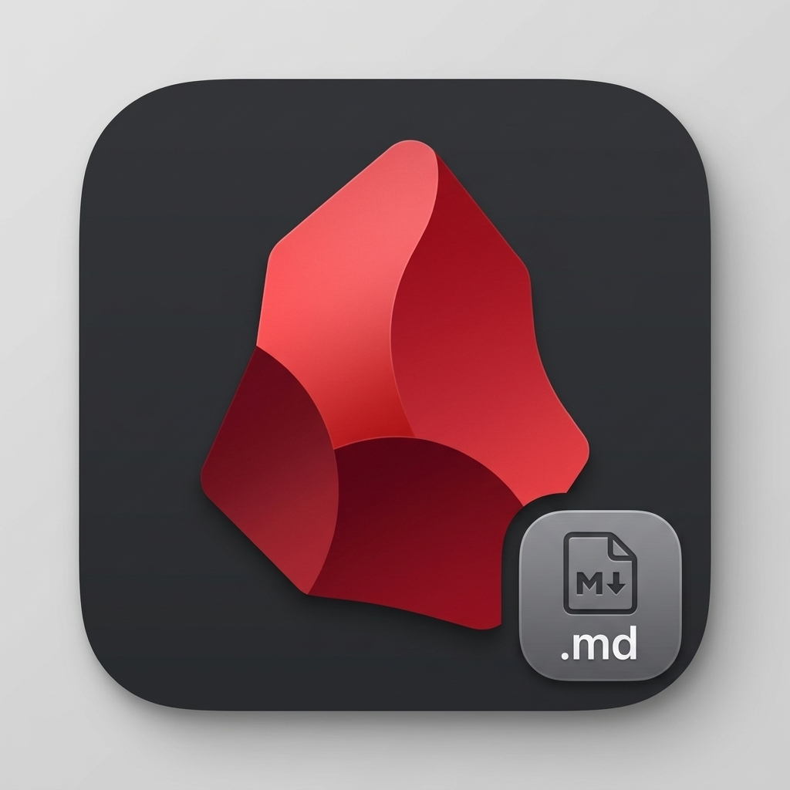
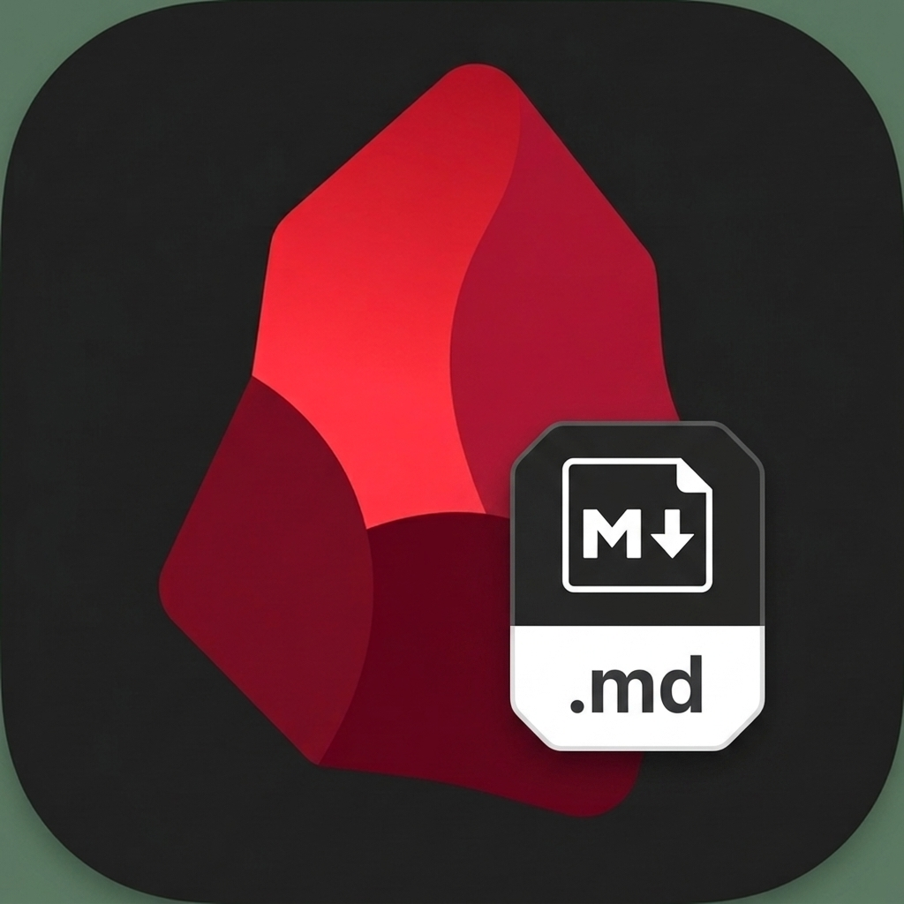

Operates directly on standard .md files on your filesystem with client-side AES-256-GCM encryption.
Enjoy an Obsidian-grade dual-mode editor, blazing-fast standalone Go CLI, and serverless Cloud Run synchronization.
An Obsidian-class user interface built with Flutter Desktop. Dense, responsive, and tuned for keyboard speed.
Spinel treats local markdown files as the uncontested single source of truth. Refer to [[01-Crypto-Argon2id-Specification]] for key derivation details.
Watch the automated typewriter type a real Spinel note, or click the pause button to write your own markdown interactively!
Spinel unifies cross-platform client agility with serverless cloud durability.
Cross-platform UI running on macOS, Linux, iOS & Android with native 120Hz smooth rendering, SQLite local caching, and custom dual-mode Markdown controller.
Zero-dependency single binary (`spinel`). Search 50,000+ notes in milliseconds, inspect frontmatter filters, and export vaults via tar.gz straight from terminal.
Military-grade AES-256-GCM encryption with Argon2id passphrase derivation. Your data is encrypted locally before ever reaching cloud mirrors or S3/GCS buckets.
Lightweight Ruby 3.3+ backend deployed serverless on GCP Cloud Run. Cloud SQL PostgreSQL 16 with JSONB indexing and automated daily snapshots.
Crafted around rich deep ruby facets, fiery crimson edges, and obsidian dark glass.
High-contrast ruby gemstone with integrated Markdown tag badge.

Sleek angular gemstone facets in pure crystalline ruby.
Warm magma gradients and incandescent edges.

Clean isometric perspective with glowing red backlight.
All tasks orchestrated effortlessly via just.
git clone https://github.com/palladius/spinel.git && cd spinel && just test
just build-cli && ./bin/spinel search-frontmatter tag:sre
just run-app